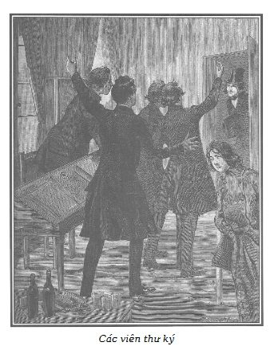

Nhiều ngày trôi qua kể từ khi Jacques Ferrand cho nhận Cecily vào làm giúp việc.
Chúng tôi mời độc giả vào văn phòng của lão chưởng khế, trong giờ ăn trưa của những người thư ký.
Thật là một chuyện kỳ dị quá sức tuyệt vời. Thay thế cho món ra-gu ít ỏi, kém hấp dẫn mà mụ Séraphin mỗi sáng thường đem cho những thư ký trẻ là một con gà trống tây to luộc đặt trên tấm bìa đáy của một tập hồ sơ ngự trị giữa bàn làm việc, bên cạnh là hai ổ bánh mềm, một tảng pho mát Hà Lan và ba chai vang còn gắn xi, một tráp bút bằng chì cũ đựng đầy muối trộn. Vài người trong bọn họ ngại không khí, nguyền rủa sự vắng mặt của người trưởng thư ký, mà thiếu ông ta, thì bữa ăn theo thứ bậc tôn ti chưa thể bắt đầu.
Một sự tiến bộ, nói đúng hơn, một sự đảo lộn cơ bản trong bữa ăn thường ngày của những người thư ký của lão chưởng khế báo hiệu một sự biến động lớn trong nhà.
Hãy nghe cuộc trao đổi kỳ thú sau đây của họ:
– Kia là con gà trống tây. Từ khi nó ra đời đến nay, chưa bao giờ thấy nó xuất hiện trên bàn ăn của bọn thư ký chúng ta.
– Cũng như ông chủ, từ khi trở thành ông chủ, chưa bao giờ ông cho những thư ký của mình một con gà trống tây ăn bữa trưa.
– Và, cuối cùng con gà trống tây kia là của chúng ta. – Một anh chạy giấy thèm nhỏ dãi, reo to.
– Anh bạn chạy giấy ơi, anh quên à, con gà ấy đối với anh là một phụ nữ xa lạ đấy!
– Và như một người Pháp, anh cần có sự thù ghét đối với người ngoại lai chứ!
– Mọi cái người ta có thể làm, là cho anh đôi cẳng, biểu hiện cho sự nhanh chóng của anh ở văn phòng!
– Tôi tưởng ít ra mình cũng được bộ xương. – Anh chạy giấy lẩm bẩm.
– Người ta có thể ban cho anh nhưng anh không có quyền gì. Cũng như trong Hiến chương năm 1814 ấy, khác nào một thứ xương của tự do, theo nghiên cứu của nhà hùng biện của văn phòng*.
Nguyên văn: Mirabeau, nghị sĩ nổi tiếng hùng biện thời cách mạng tư sản Pháp, đại biểu của giới bình dân mặc dù xuất thân quý phái. Đây là cách đùa cợt của các thư ký ở văn phòng luật sư.
– Về chuyện bộ xương, – một anh trẻ tuổi, giọng phớt tỉnh nói – hẳn Chúa muốn có linh hồn bà Séraphin. Từ khi bà ta chết đuối trong một cuộc đi chơi, chúng ta không còn bị bắt buộc ăn món ra-gu tồi của bà ta đến hết đời.
– Và đã trọn một tuần, lẽ ra cho chúng ta ăn trưa…
– Ông ta cho mỗi người bốn mươi xu một ngày.
– Đó chính là điều tôi muốn nói: Chúa muốn có linh hồn mẹ Séraphin.
– Về việc ấy thì, khi còn bà ta, có bao giờ ông chủ cho chúng ta bốn mươi xu.
– Quá sức thật!
– Thật là phi thường!
– Không có một văn phòng luật sư nào ở Paris…
– Ở cả châu Âu.
– Ở cả vũ trụ nữa kìa! Cho một anh thư ký bình thường bốn mươi xu để ăn trưa!
– Về việc bà Séraphin, có ai trong các anh đã trông thấy người đầy tớ thay thế bà ta chưa?
– Có một cô gái người Alsace mà bà gác cổng khu nhà cô Louise đáng thương ở đã dẫn đến vào một buổi chiều. Người gác cổng đã nói với chúng ta rồi phải không?
– Đúng.
– Tôi cũng thế.
– Chà, thật khó mà thấy được cô ta vì ông chủ nghiêm cấm không cho chúng ta được đi vào căn nhà trong sân.
– Người gác cổng từ nay làm luôn nhiệm vụ dọn phòng làm việc. Làm sao để thấy được cô gái lẳng lơ ấy?
– Này, tôi đã thấy ả.
– Anh ấy à?
– Ở đâu đấy?
– Cô ta như thế nào?
– Lớn hay bé?
– Già hay trẻ?
– Phải nói trước là tôi bảo đảm rằng cô ta không có một khuôn mặt duyên dáng như Louise Morel đáng thương kia! Cô bé ấy rõ tốt.
– Anh đã được gặp cô ta. Hãy nói xem cô ta như thế nào, cô hầu mới đó?
– Khi tôi nói là đã gặp, tôi thấy chiếc mũ của cô ta, một chiếc mũ buồn cười…
– Được rồi, nhưng thế nào?
– Chiếc mũ bằng nhung màu mận chín, tôi tin như thế, một chiếc mũ trẻ con giống như mũ của cô bán chổi.
– Như những cô gái Alsace. Thật đơn giản, cô ta là người Alsace.
– Này, này, này…
– Mẹ kiếp! Chuyện gì làm cho anh ngạc nhiên thế? Mèo bị bỏng sợ nước lạnh.
– Ra thế, Chalamel, câu phương ngôn đó liên quan thế nào với cái mũ Alsace?
– Không có liên quan gì.
– Vì sao anh lại nói câu đó?
– Vì làm một việc thiện đem lại lợi ích thì không bao giờ thiệt, và rằng “cứu vật vật trả ơn”.
– Này, Chalamel, nói những chuyện nhảm bằng phương ngôn chẳng khớp vào đâu cả, mất cả thì giờ. Hãy nói là anh đã thấy gì ở cô hầu đó.
– Hôm qua tôi đi qua sân, thấy nó tựa lưng vào một trong những chiếc cửa sổ ở tầng trệt.
– Cái sân à?
– Ngu thế! Không, cô hầu đấy! Những ô cửa kính ở phía dưới bẩn đến nỗi tôi không thể nào trông thấy được gì, nhưng ở giữa, cửa sổ ít bụi hơn, tôi thấy chiếc mũ màu mận và một chùm những món tóc quăn, đen như hạt huyền vì cô ta để tóc theo kiểu Titus.
– Tôi tin chắc ông chủ cũng không thấy gì hơn anh qua cặp kính của ông ta. Như người ta nói, nếu ông ta ở một mình với một người đàn bà trên trái đất này, thì thế giới này sẽ chấm dứt tức thì.
– Đó không phải là điều lạ! Cười người hôm trước hôm sau người cười, hơn nữa sự chính xác là điều lịch sự của các bậc vua chúa.
– Lạy Chúa, khi Chalamel nhúng vào chuyện đó thì rõ chán!
– Hãy nói với tôi anh giao du với ai, tôi sẽ cho anh biết anh là người như thế nào.
– Ôi, hay thật!
– Tôi, tôi cho là do sự mê tín dị đoan mà ông chủ ngày càng mụ mẫm.
– Có lẽ là do sám hối mà ông ta cho chúng ta bốn mươi xu ăn trưa.
– Sự thật là ông ta đã hóa điên!
– Hoặc ốm!
– Mấy ngày nay tôi thấy ông ta như bị ngớ ngẩn vậy!
– Người ta ít gặp được ông ta. Ông ta vốn là nỗi bất hạnh của chúng ta trong phòng làm việc từ tảng sáng, lúc nào cũng theo dõi sát sàn sạt. Bây giờ thì đã hai ngày ông ta chưa hề lai vãng đến văn phòng làm việc.
– Vấn đề là ông chủ bận quá nhiều việc.
– Và sáng nay có lẽ chúng ta đến chết đói vì phải chờ ông ta.
– Văn phòng thay đổi, thế đấy! Chính cái cậu Germain đáng thương ấy sẽ vô cùng ngạc nhiên nếu người ta nói cậu ta hãy hình dung, hỡi chàng trai của tôi, ông chủ cho bốn mươi xu để ăn trưa đấy! Ái chà, không thể thế được! Thế được quá đây! Chính với tôi, Chalamel, đích thân ông chủ đã tuyên bố như vậy. Mày muốn đùa à? Tôi muốn đùa đấy! Điều ấy xảy ra như thế này này: Trong hai ba ngày sau cái chết của bà Séraphin, chúng tôi không có buổi ăn trưa, như thế lại thích hơn, với cách này thì bớt tốn đi, nhưng với cách khác thì bữa ăn chung lại phải mất tiền, tuy nhiên, chúng tôi kiên nhẫn mà bảo: Ông chủ chẳng còn người hầu và chị giúp việc trong nhà. Khi ông ấy tìm thuê lại được một chị khác, thì chúng tôi phải trở lại với cái món cháo đặc đã chán ngấy. Thế mà, không một tí nào đâu. Thế là tôi được coi như là nghệ sĩ để đưa lên ông chủ những lời ca thán của bao tử bọn chúng tôi. Ông ta đang có mặt cùng với người trưởng văn thư, nói: “Tôi không muốn nuôi cơm các anh buổi sáng nữa!” Ông ta nói cục cằn, dường như đang suy nghĩ chuyện gì khác. “Cô hầu của tôi không có thì giờ lo bữa trưa cho các anh.” – “Nhưng thưa ông, ông đã thỏa thuận là cho chúng tôi ăn sáng.” – “Này, các anh ra ngoài nhà hàng mà ăn, tôi sẽ trả tiền. Mỗi người cần bao nhiêu, bốn mươi xu mỗi người nhé?” Ông ta nói thêm và tuyên bố số tiền bốn mươi xu chẳng khác gì nói hai mươi hoặc một trăm xu, có vẻ như suy nghĩ mỗi lúc một nhiều hơn đến một điều gì khác. “Vâng ạ! Thưa ông chủ, bốn mươi xu là đủ cho chúng tôi ạ!” – Tôi chộp ngay thời cơ, nói liền. “Được! Người trưởng văn thư sẽ chi trả món tiền ấy, tôi sẽ tính toán sau với anh ta.” Và thế rồi ông ta đóng sập cửa lại, không tiếp nữa. Thưa các vị, hãy thừa nhận đi, là cậu Germain hẳn sẽ ngạc nhiên hết sức trước sự hào phóng ấy của ông chủ!
– Germain hẳn có thể nói là ông chủ đã uống rượu!
– Và đó còn là một sự lạm dụng*.
Đồng âm khác nghĩa: “a bu” là đã uống rượu, “abus” là lạm dụng.
– Chalamel, chúng tôi thích những câu phương ngôn của anh hơn.
– Nói nghiêm túc, tôi tin là ông chủ bị ốm. Đã mười ngày nay không nhận ra được ông ta nữa, hai má hõm vào, bỏ lọt cả nắm tay. Và đãng trí nhiều hơn! Coi chừng! Một hôm ông ấy bỏ kính ra để đọc một văn bản, mắt ông ấy đỏ ngầu, rực lửa như một hòn than.
– Ông ấy có quyền thực hiện “sòng phẳng là bạn tốt”.
– Hãy để tôi nói. Tôi thưa với quý ngài rằng thật khác thường, tôi trình văn bản cho ông ta đọc, nhưng ông ta cứ gục mặt xuống.
– Ông chủ ấy à? Vấn đề kỳ cục thật! Ông ta có thể làm được gì với cái đầu gục xuống như thế? Ông ta sẽ ngạt thở, chí ít thì, những thói quen của ông ta như anh nói đã thay đổi nhiều.
– Ồ, cái cậu Chalamel rõ chán chưa! Tôi nói với cậu rằng tôi đã đưa ngược tờ văn bản cho ông ta đọc kia mà!
– Ái chà, hẳn là ông ta càu nhàu phải biết!
– Lầm to! Ông ta không nhận ra. Ông ta chỉ nhìn văn bản độ mười phút, đôi mắt to và đỏ chăm chú dán vào đó. Sau đó ông ta trao lại cho tôi và nói “Được”.
– Vẫn cứ cúi gục mặt xuống à?
– Luôn vậy!
– Thế ông ta không đọc văn bản à?
– Tất nhiên! Trừ phi là đọc được ở mặt trái!
– Buồn cười thật!
– Ông chủ có thái độ rầu rĩ và khá dữ tợn, đến mức tôi không dám nói gì và tôi rút lui như không có chuyện gì xảy ra.
– Và cả tôi cũng thế, cách đây bốn ngày, tôi đang ở trong phòng giấy. Một người trưởng thư ký rồi hai, ba người khách mà ông chủ hẹn gặp đến. Họ sốt ruột chờ. Theo yêu cầu của họ, tôi gõ cửa phòng làm việc, không thấy tiếng trả lời. Tôi vào…
– Thế nào?
– Ông Jacques Ferrand đang ngồi khoanh tay trên bàn giấy. Chiếc đầu hói khó coi của ông ta gục xuống hai cánh tay, bất động.
– Ông ta ngủ à?
– Tôi tin như thế. Tôi lại gần: “Thưa ông, có người đến gặp.” Ông ta không động đậy. “Thưa ông…” Không trả lời. Sau cùng tôi đụng vào vai ông ta. Ông ta bật dậy như bị ma cắn. Trong cử chỉ bất thình lình đó, đôi kính của ông ta tụt xuống mũi và tôi thấy… Anh không bao giờ tin được.
– Anh thấy gì?
– Những giọt nước mắt!
– Ái chà, khôi hài làm sao!
– Một chuyện đùa hết ý!
– Ông chủ khóc?! Thôi đi.
– Khi mà người ta thấy chuyện đó, có là chạch đẻ ngọn đa, con gà đi ủng!
– Ta, ta ta… ta ta… Những chuyện vớ vẩn của các anh không thay đổi được cái điều tôi đã thấy, thực như thấy các anh lúc này đây.
– Khóc à?
– Đúng, khóc. Sau đó ông ta tỏ ra phẫn nộ vì bị người khác bất chợt thấy ông ta trong trạng thái đó. Ông ta vội đeo kính và hét lên: “Cút! Cút!” – “Nhưng thưa ông…” – “Cút!” – “Có khách hàng ông hẹn gặp và…” – “Tôi không có thì giờ, bảo họ cút cả đi và cả anh nữa.” Thấy ông ta đang tức giận, tôi đi ra và bảo với khách đang khá phật ý là ông chủ đang bị ho gà, không tiếp được, để giữ uy tín cho văn phòng.

.Cuộc trao đổi thú vị đó bị ông trưởng thư ký làm đứt quãng khi ông ta hốt hoảng bước vào. Mọi người hoan hô chào ông và mọi cặp mắt đầy thiện cảm đều quay về con gà trống tây thèm thuồng, nôn nóng.
– Xin bỏ quá chứ, thưa lãnh chúa, ngài làm chúng tôi chờ hết nước hết cái. – Chalamel nói.
– Hãy coi chừng, lần khác thì chúng tôi không đợi đâu!
– Này, thưa các vị, không phải lỗi ở tôi. Tôi còn lo lắng bồn chồn bằng mấy các vị nữa kia. Lấy danh dự mà nói, khéo mà ông chủ phát điên mất!
– Đấy, tôi đã bảo mà!
– Nhưng chuyện đó không ngăn cản chúng tôi ăn chứ?
– Trái lại…
– Vừa ăn vừa nói chuyện vẫn cứ tốt thôi.
Anh chạy giấy reo lên:
– Chúng ta sẽ nói tuyệt hơn.
Trong lúc đó thì Chalamel chặt con gà trống tây ra từng miếng và hỏi ông trưởng thư ký:
– Vì lẽ gì mà ông lại cho rằng ông chủ phát điên?
– Chúng tôi mới chớm nghĩ là ông chủ đã hoàn toàn mất trí khi ông ta cho chúng ta bốn mươi xu ăn trưa mỗi ngày.
– Tôi thú nhận là chuyện đó cũng làm tôi ngạc nhiên chẳng kém. Nhưng vẫn chưa là gì, tuyệt đối chưa là gì so với những gì vừa xảy ra.
– Chà, lạ nhỉ!
– Ái chà, thế đó! Có phải cái lão già bất hạnh đó sẽ khá là mất trí đến mức bắt chúng ta phải ăn trưa hằng ngày ở nhà hàng Cadran-Bleu do ông ta trả tiền hay sao?
– Và sau đó đi xem hát chứ?
– Và sau đó thì đi uống cà phê rồi kết thúc buổi tối bằng bữa rượu punch nữa à?
– Và sau đó…
– Thưa các vị, các vị cứ cười đùa cho thỏa thích, những cảnh tượng mà tôi vừa chứng kiến hãi hùng hơn là vui thích.
– Vậy hãy kể cho chúng tôi nghe đi!
– Vâng, đúng thế! Ông không nên quá bận tâm đến bữa ăn, – Chalamel nói – chúng tôi vểnh tai nghe đây.
– Và ra sức nhai, rõ láu cá chưa. Tôi thừa biết trong khi tôi nói thì các anh ra sức nhai, và con gà trống tây sẽ hết trước khi câu chuyện kết thúc. Chịu khó nhỉ, để đến lúc ăn tráng miệng đã!
Chúng tôi không biết có phải là do quá đói hay là sốt ruột muốn tò mò nghe cho thủng câu chuyện mà các cậu chàng ăn nhanh khiếp, chẳng mấy lúc mà câu chuyện của người trưởng văn thư đã bắt đầu.
Để khỏi bị ông chủ phát hiện, họ phái anh chạy giấy sang phòng bên cạnh canh chừng.
Ông trưởng thư ký nói với các đồng sự:
– Trước hết các ông biết rằng người gác cổng, cách đây vài ngày rất lo lắng cho sức khỏe của ông chủ, vì thức rất khuya nên ông ta đã nhiều lần thấy ông Ferrand đi xuống vườn, mặc dù mưa rét. Ông chủ đi dạo từng bước dài trong vườn. Một lần, ông ta chui ra khỏi ổ hỏi ông chủ có cần gì không. Ông chủ bảo ông ta đi ngủ bằng một giọng như thế nào đó, làm ông ta đứng lặng và cứ như thế mà tự kiềm chế ngay sau khi nghe thấy bước chân ông chủ xuống vườn, đêm nào cũng vậy, bất chấp thời tiết.
– Ông chủ bị bệnh mộng du?
– Cái đó chưa hẳn đúng, vì những cuộc dạo đêm như thế báo trước một sự bồn chồn đáng chú ý. Ban nãy tôi đi vào phòng làm việc của ông chủ để xin vài chữ ký. Lúc tôi đặt tay vào núm ổ khóa, hình như tôi nghe có tiếng nói. Tôi dừng lại. Và tôi phân biệt được hai hoặc ba tiếng kêu nghẹn ngào như những tiếng kêu rên rỉ. Sau một lúc do dự, thật thế, lo có sự bất hạnh, tôi mở cửa vào.
– Rồi sao?
– Cái gì thế này, tôi thấy ông chủ quỳ dưới đất…
– Quỳ à?
– Dưới đất?
– Đúng, quỳ trên sàn, hai bàn tay ôm trán và cùi tay chống vào mặt chiếc ghế bành cũ.
– Thật đơn giản. Chúng ta thật ngu! Ông ta là người sùng đạo có cỡ đấy! Ông ta cầu kinh thêm đấy!
– Dù sao đi nữa, đấy cũng là một kiểu cầu kinh buồn cười. Người ta chỉ nghe thấy những tiếng rên rỉ. Tuy nhiên, từng lúc ông ta lẩm bẩm trong miệng: “Lạy Chúa tôi, lạy Chúa tôi…” Như một người thất vọng. Và lại còn chuyện này kỳ cục hơn nữa. Bằng một động tác, ông ta như muốn xé rách ngực với những ngón tay, chiếc áo sơ mi phanh ra và tôi thấy rất rõ trong đám lông ngực, một chiếc ví đỏ treo ở cổ bằng sợi dây chuyền kim loại.
– Chà, chà, thế rồi sao?
– Thế rồi, thấy thế, tôi không biết nên đi vào hay quay ra!
– Đó cũng là quan điểm của tôi!
– Tôi đứng nguyên tại chỗ, rất bối rối khi ông chủ đứng bật dậy và đột ngột quay lại phía tôi. Ông ta cắn trong miệng một chiếc khăn mùi soa bằng vải ô vuông, cặp kính nằm trên ghế bành… không… không… Thưa các vị, cả đời tôi, tôi chưa từng trông thấy một bộ mặt như vậy, ông ta giống như một kẻ sa địa ngục. Tôi hoảng sợ lùi lại. Xin thề danh dự, tôi hoảng sợ. Lúc bấy giờ, ông ta…
– Nhảy vào túm cổ ông?
– Không đâu! Ban đầu ông ta lơ láo nhìn tôi, sau đó để rơi chiếc khăn mùi soa mà ông ta đã nhằn đến rách, ông ta kêu lên và nhảy vào vòng tay tôi kêu lên:
– Ôi, tôi thật là đau khổ!
– Khôi hài làm sao!
– Thật là khôi hài! Mặc dù vẻ mặt ông ta lúc đó như một tử thi khi nói lên những lời đó với giọng nói như xé ruột xé gan, vậy mà vẫn có phần nào êm dịu.
– Êm dịu! Đến thế kia à? Không có tiếng gõ mõ, tiếng chim hù bị cảm nào lại không giống như âm nhạc trong giọng nói của ông chủ!
– Tiếng nói của ông ta lúc đó quả là não nuột, tôi cảm thấy gần như xúc động. Mặc dù thường ngày ông ta không phải người hay giãi bày tâm sự. “Thưa ông, – tôi nói với ông ta – hãy tin rằng…” – “Mặc tao, mặc tao. – Ông ta trả lời tôi. – Nói ra như thế với người khác nỗi đau khổ của mình mới khuây khỏa được ít nhiều.” Tất nhiên lúc đó ông ta nhầm tôi với một người nào khác.
– Ông ta mày tao với ông, thế thì ông phải khao chúng tôi hai chai rượu Bordeaux.
– Phương ngôn đã nói như thế! Thiêng liêng thật! Phương ngôn là trí tuệ của các dân tộc.
– Này, Chalamel. Hãy để lại các câu đố chữ. Các vị chắc hiểu, thưa các vị, khi ông chủ mày tao với tôi, tôi hiểu ngay là ông ta nhầm tôi với một người khác, hoặc đang bị sốt cao. Tôi gỡ ra và nói với ông ta: “Thưa ông, ông hãy bình tĩnh. Tôi đây mà…” Lúc bấy giờ ông ta mới ngớ ngẩn nhìn tôi. “May quá, giờ mới là thực đây!” Cặp mắt ông ta lạc đi, hỏi “có chuyện gì vậy?” “ai đó?” “anh muốn gì ở tôi?” và cứ mỗi câu hỏi ông ta lại lấy bàn tay vỗ trán như muốn xua đuổi đám mây che lấp tư duy mình.
– Ai đã làm mờ tư duy ông ta. Như có trời định. Hoan hô. Trưởng thư ký, chúng ta cùng làm một ca kịch. Khi người ta thấu hiểu tâm hồn tôi đến thế, người ta phải viết một ca kịch.
– Này, hãy im đi, Chalamel.
– Ông chủ có thể có chuyện gì?
– Quả thật, có chuyện gì tôi không biết, nhưng có điều chắc là, khi bình tĩnh trở lại, ông ta cau mày một cách dữ tợn. Ông ta nói một cách gay gắt không để thời gian cho tôi kịp trả lời: “Anh đến đây làm gì? Anh vào đây lâu chưa? Tôi không thể ở trong nhà tôi mà lại bị bọn do thám vây quanh. Tôi đã nói gì? Anh đã nghe được gì? Trả lời đi, trả lời đi!” Ông ta có thái độ dữ tợn buộc tôi phải trả lời: “Thưa ông, tôi không nghe thấy gì cả! Tôi mới vào đây thôi ạ!” – “Anh không lừa dối tôi chứ?” – “Thưa ông, không!” – “Vậy anh muốn gì?” – “Tôi xin ông vài chữ ký, thưa ông.” – “Đưa đây.” Và ông ta ký, ký, không cần đọc, đến nửa tá chứng thư công chứng, mà cái con người đó chưa từng đặt bút xuống một văn bản nào mà lại không đọc, có thể nói, từng chữ một, hai lần từ đầu đến cuối. Tôi quan sát tay ông ta từng lúc dừng lại giữa chữ ký, ông ta như bị thu hút bởi một ý tưởng nào đó và rồi bảo tôi đi ra và tôi nghe tiếng ông đi xuống cầu thang gác nhỏ nối phòng làm việc ra sân.
– Có thể do chuyện gì nhỉ?
– Thưa các vị, có thể ông ta nhớ tiếc bà Séraphin!
– Lầm to! Ông ấy mà nhớ tiếc một ai!
– Chuyện đó làm tôi nghĩ đến người gác cửa nói là ông linh mục de Bonne-Nouvelle và thầy trợ lễ nhiều lần đến thăm ông chủ nhưng họ không được tiếp. Thật là chuyện đáng ngạc nhiên. Họ có nhả cái nhà này bao giờ đâu!
– Điều tôi muốn biết là bọn thợ mộc và thợ khóa ông ta thuê làm những gì trong căn nhà riêng ấy.
– Họ đã làm suốt ba ngày đêm liên tiếp.
– Và buổi chiều người ta đã đem những đồ gỗ bọc trong một tấm thảm lớn.
– Quả vậy, là lá la, tôi chịu thôi, không đoán nổi như Thiên nga xứ Cambrai*.
Tên hiệu của nhà văn Fenelon, tác giả cuốn Những cuộc phiêu lưu của Télémaque.
– Có thể là sự hối hận vì đã bỏ tù Germain giày vò ông ta chăng?
– Ông ta mà hối hận sao? Ông ta sắt đá và rất cả gan để làm chuyện đó, như Đại bàng xứ Meaux nói.
– Chalamel đến là hay đùa!
– Về phần Germain, anh ta sắp có nhiều bạn mới nổi tiếng trong tù. Tội nghiệp anh chàng!
– Chuyện đó là thế nào?
– Tờ báo của tòa án đăng tin nhóm trộm cướp và giết người đã bị bắt ở Champs-Élysées trong một hầm rượu.
– Và đấy là một cái hầm thật sự.
– Rằng, bọn gian ác đó đã bị nhốt vào nhà giam La Force.
– Louise cũng có những bạn mới trong đó, vì trong đám cướp có cả một gia đình ăn cắp và giết người, cha và con trai, mẹ và con gái.
– Thế thì họ sẽ tống bọn con gái về Saint-Lazare, Louise đang ở đó.
– Có thể, một đứa trong bọn đó đã ám sát bà Bá tước ở nhà gần Đài Thiên Văn, một trong những khách hàng của ông chủ. Ông ta thường phái tôi đến nắm tin tức của bà Bá tước. Ông ta có vẻ quan tâm nhiều đến sức khỏe của bà ta. Nói đúng ra đó là chuyện duy nhất ông ta không tỏ vẻ bối rối. Mới hôm qua ông ta sai tôi đi xem tình trạng bà ấy ra sao.
– Này?
– Vẫn là chuyện cũ. Hôm nay người ta hy vọng, ngày mai người ta lại thất vọng. Không biết bà ấy có qua khỏi hôm nay không. Hôm trước nữa thì người ta thất vọng nhưng hôm qua thì người ta nói là có tia hy vọng. Nhưng điều phức tạp là bà ta đang bị sốt màng não.
– Anh có được vào trong nhà và xem tận mắt nơi vụ ám sát xảy ra không?
– Tôi không thể đi quá xa cái cổng vòm và anh gác cổng này cũng thuộc loại không thích bắt chuyện.
– Thưa các vị, ông chủ lên kìa. – Anh chạy giấy kêu lên và đi nhanh vào phòng làm việc.
Bỗng chốc những người thư ký trẻ vội vàng trở lại bàn làm việc, chăm chú gục xuống bàn viết, trong lúc anh chạy giấy trong chốc lát đã đặt bộ xương con gà trống tây trên một miếng bìa cứng đầy hồ sơ.
Jacques Ferrand xuất hiện.
Lão bỏ chiếc mũ bằng lụa đen ra. Tóc lão màu hung lẫn những đám màu xám, tỏa lộn xộn qua hai bên thái dương. Vài đường mạch máu trên sọ dường như muốn tóe máu. Bộ mặt ngắn và hai má lõm sâu đều một màu trắng bệch. Người ta không thể thấy được thái độ của lão qua đôi kính to màu xanh, nhưng những nét biến đổi sâu sắc trong con người ấy báo hiệu một sự tàn phá dữ dội do dục vọng đam mê giày vò.
Lão ta chậm chạp đi qua phòng làm việc, không nói một lời nào, cũng không tỏ ra là thấy những người thư ký đang có mặt ở đấy. Lão đi tiếp sang phòng trưởng thư ký, và cũng đi như thế qua phòng của ông ta rồi đi xuống cầu thang nhỏ dẫn ra sân. Lão ta để lại phía sau mình những cánh cửa mở. Mọi người đều ngạc nhiên về thái độ của ông chủ.